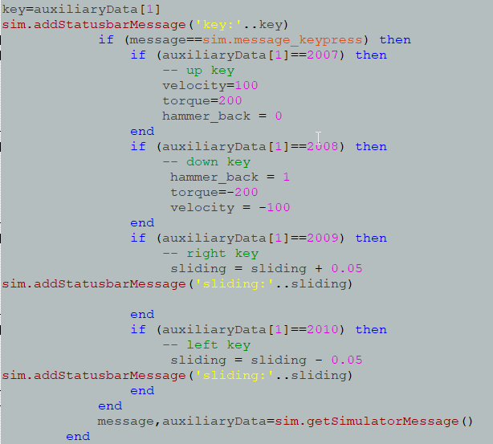
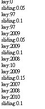
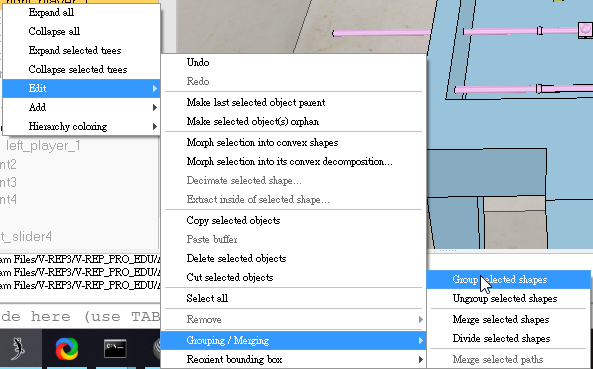

參考老師上課影片並反造老師Vrep 手足球單軸方向鍵控制製作
單邊方向鍵測試:
下載連結:第一版
------------------------------------------------------------------------------------
經過跟組員討論跟詢問後在原程式把加上對鍵盤上按鍵偵測指令

並利用模擬找出上下左右對應數字

兩邊手動對打:
下載連結:第二版
------------------------------------------------------------------------------------
參考網址

兩個以上球員利用此合併
Vrep 手足球多球員方向鍵測試:
Vrep 手足球 手動VS手動(無送球機構無涉邊界):
下載連結:第三版
------------------------------------------------------------------------------------
經過詢問組員找到設置邊界程式碼並加入送球機構版本中而完成手動VS手動(完整版)
手動VS手動(完整版):
下載連結:最終版